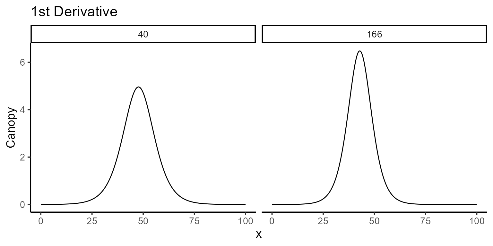
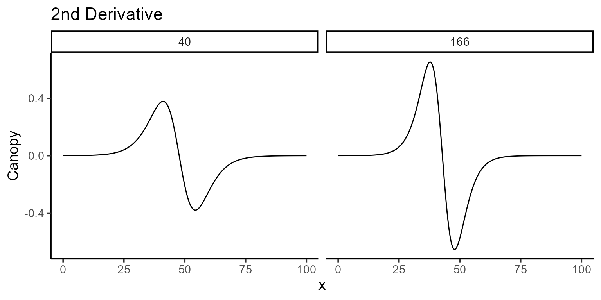

This vignette demonstrates the versatility and utility of the
predict.modeler() function when applied to a fitted model.
This function is designed to handle models of class modeler
and provides several prediction types, outlined as follows:
-
“point”: Computes the value of the fitted function
\(\hat{f}(x)\) for a given vector of
\(x\) values.
-
“auc”: Calculates the area under the fitted curve
(AUC) over a specified interval by approximating the integral using the
trapezoidal rule.
-
“fd”: Provides the first derivative \(\hat{f}'(x)\) for a given vector of
\(x\) values using numerical
approximation.
-
“sd”: Computes the second derivative \(\hat{f}''(x)\) for a given vector
of \(x\) values using numerical
approximation.
- “formula”: Evaluates a user-defined function of the model parameters, returning both the predicted value and its standard error.
Each type of prediction includes corresponding standard errors, which are calculated using the delta method.
library(flexFitR)
library(dplyr)
library(kableExtra)
library(ggpubr)
library(purrr)
data(dt_potato)
head(dt_potato) |> kable()| Trial | Plot | Row | Range | gid | DAP | Canopy | GLI |
|---|---|---|---|---|---|---|---|
| HARS20_chips | 1 | 1 | 1 | W17037-24 | 0 | 0.000 | 0.0000000 |
| HARS20_chips | 1 | 1 | 1 | W17037-24 | 29 | 0.000 | 0.0027216 |
| HARS20_chips | 1 | 1 | 1 | W17037-24 | 36 | 0.670 | -0.0008966 |
| HARS20_chips | 1 | 1 | 1 | W17037-24 | 42 | 15.114 | 0.0322547 |
| HARS20_chips | 1 | 1 | 1 | W17037-24 | 56 | 75.424 | 0.2326896 |
| HARS20_chips | 1 | 1 | 1 | W17037-24 | 76 | 99.811 | 0.3345619 |
0. Model fitting
To illustrate the functionality of predict(), we use a
potato dataset to fit logistic models of the form:
\[f(t) = \frac{L}{1 + e^{-k(t - t_0)}}\]
fn <- function(t, L, k, t0) L / (1 + exp(-k * (t - t0)))For simplicity, we’ll focus on just two plots from the dataset (plot 40 and plot 166) out of the total 196 plots available. After fitting the model, we’ll take a closer look at the parameter estimates, visualize the fitted curves, and start making predictions.
plots <- c(40, 166)
mod_1 <- dt_potato |>
modeler(
x = DAP,
y = Canopy,
grp = Plot,
fn = "fn",
parameters = c(L = 100, k = 4, t0 = 40),
subset = plots
)
print(mod_1)
#>
#> Call:
#> Canopy ~ fn(DAP, L, k, t0)
#>
#> Residuals:
#> Min. 1st Qu. Median Mean 3rd Qu. Max.
#> -4.28357 -1.72631 0.08931 -0.41747 1.00449 3.28325
#>
#> Optimization Results `head()`:
#> uid L k t0 sse
#> 40 99.8 0.199 47.7 37.4
#> 166 99.0 0.262 42.8 23.2
#>
#> Metrics:
#> Groups Timing Convergence Iterations
#> 2 0.7735 secs 100% 729 (id)
plot(mod_1, id = plots)
1. Point prediction
To make point predictions, we use the predict() function
and specify the \(x\) value(s) for
which we want to compute \(\hat{f}(x)\). By default, the prediction
type is set to "point", so it is unnecessary to explicitly
include type = "point".
| uid | fn_name | x_new | predicted.value | std.error |
|---|---|---|---|---|
| 40 | fn | 55 | 80.85282 | 2.912364 |
| 166 | fn | 55 | 95.06255 | 1.625402 |
A great way to visualize this is by plotting the fitted curve and overlaying the predicted points.
mod_1 |>
plot(id = plots, type = 3) +
color_palette(palette = "jco") +
geom_point(data = points, aes(x = x_new, y = predicted.value), shape = 8)You’ll also notice that predictions come with standard errors, which
can be adjusted using the se_interval argument to choose
between "confidence" or "prediction"
intervals, depending on the type of intervals you want to generate
(sometimes referred to as narrow vs. wide intervals).
| uid | fn_name | x_new | predicted.value | std.error |
|---|---|---|---|---|
| 40 | fn | 55 | 80.85282 | 3.994805 |
| 166 | fn | 55 | 95.06255 | 2.697961 |
2. Integral of the function (area under the curve)
The area under the fitted curve is another common calculation,
especially when trying to summarize the overall behavior of a function
over a specific range. To compute the AUC, set type = "auc"
and provide the interval of interest in the x argument. You
can also specify the number of subintervals for the trapezoidal rule
approximation using n_points (e.g.,
n_points = 500 provides a high-resolution approximation
here).
\[ \text{Area} = \int_{0}^{T} \frac{L}{1 + e^{-k(t - t_0)}} \, dt \]
| uid | fn_name | x_min | x_max | predicted.value | std.error |
|---|---|---|---|---|---|
| 40 | fn | 0 | 108 | 6018.833 | 89.57456 |
| 166 | fn | 0 | 108 | 6450.840 | 69.71235 |
3. Function of the parameters
In many cases, interest lies not in the parameters themselves but in
functions of these parameters. By using the formula
argument, we can compute user-defined functions of the estimated
parameters along with their standard errors. No additional arguments are
required for this functionality.
| uid | fn_name | formula | predicted.value | std.error |
|---|---|---|---|---|
| 40 | fn | k/L * 100 | 0.1990757 | 0.0173468 |
| 166 | fn | k/L * 100 | 0.2644616 | 0.0312821 |
| uid | fn_name | formula | predicted.value | std.error |
|---|---|---|---|---|
| 40 | fn | (k * L)/4 | 4.959301 | 0.3761384 |
| 166 | fn | (k * L)/4 | 6.480310 | 0.7140117 |
4. Derivatives
For those interested in the derivatives of the fitted function,
predict.modeler() provides tools to compute both the first
(\(f'(x)\)) and second order (\(f''(x)\)) derivatives at specified
points or over intervals. While derivatives for logistic functions are
straightforward to compute analytically, this is not true for many other
functions. To address this, predict() employs a numerical
approximation using the “Richardson” method.
For the logistic function, the first derivative has the following form:
\[ f'(t) = \frac{k L e^{-k(t - t_0)}}{\left(1 + e^{-k(t - t_0)}\right)^2} \]
And the second derivative the following:
\[f''(t) = \frac{k^2 L e^{-k(t - t_0)} \left(1 - e^{-k(t - t_0)}\right)}{\left(1 + e^{-k(t - t_0)}\right)^3}\] Here the first derivative tells us the growth rate, while the second derivative reveals how the growth rate is accelerating or decelerating.
4.1. First derivative
To compute the first derivative, set type = "fd" in the
predict() function and provide points or intervals in the
x argument. In case we just want to visualize the first
derivative we can use the plot() function.
plot(mod_1, id = plots, type = 5, color = "blue", add_ci = FALSE)
The \(x\)-coordinate where the maximum occurs can be found programmatically, and the corresponding value of \(\hat{f}(x)\) can be computed using point predictions as follows:
interval <- seq(0, 100, by = 0.1)
points_fd <- mod_1 |>
predict(x = interval, type = "fd") |>
group_by(uid) |>
summarise(
max_fd = max(predicted.value),
argmax_fd = x_new[which.max(predicted.value)]
)
points_fd |> kable()| uid | max_fd | argmax_fd |
|---|---|---|
| 40 | 4.959300 | 47.7 |
| 166 | 6.480117 | 42.8 |
mod_1 |>
plot(id = plots, type = 3) +
color_palette(palette = "jco") +
geom_vline(data = points_fd, aes(xintercept = argmax_fd), linetype = 2) +
geom_label(data = points_fd, aes(x = argmax_fd, y = 0, label = argmax_fd)) +
facet_wrap(~uid) +
theme(legend.position = "none")
points_fd$y_hat <- sapply(
X = plots,
FUN = \(i) {
mod_1 |>
predict(x = points_fd[points_fd$uid == i, "argmax_fd"], id = i) |>
pull(predicted.value)
}
)
points_fd |> kable()| uid | max_fd | argmax_fd | y_hat |
|---|---|---|---|
| 40 | 4.959300 | 47.7 | 49.88846 |
| 166 | 6.480117 | 42.8 | 49.23131 |
mod_1 |>
plot(id = plots, type = 3) +
color_palette(palette = "jco") +
geom_point(data = points_fd, aes(x = argmax_fd, y = y_hat), shape = 8)4.2. Second derivative
Similarly, the second derivative can be calculated by setting
type = "sd". This derivative shows how the growth rate
itself is changing, helping to determine when growth starts to slow down
or speed up.
plot(mod_1, id = plots, type = 6, color = "blue", add_ci = FALSE)
We can also identify where the second derivative reaches its maximum and minimum values, and plot these changes for a deeper understanding of the growth dynamics.
points_sd <- mod_1 |>
predict(x = interval, type = "sd") |>
group_by(uid) |>
summarise(
max_sd = max(predicted.value),
argmax_sd = x_new[which.max(predicted.value)],
min_sd = min(predicted.value),
argmin_sd = x_new[which.min(predicted.value)]
)
points_sd |> kable()| uid | max_sd | argmax_sd | min_sd | argmin_sd |
|---|---|---|---|---|
| 40 | 0.3793269 | 41.1 | -0.3793232 | 54.3 |
| 166 | 0.6530568 | 37.8 | -0.6530419 | 47.9 |
mod_1 |>
plot(id = plots, type = 3) +
color_palette(palette = "jco") +
geom_vline(data = points_sd, aes(xintercept = argmax_sd), linetype = 2) +
geom_vline(data = points_sd, aes(xintercept = argmin_sd), linetype = 2) +
facet_wrap(~uid) +
theme(legend.position = "none")5. Conclusions
The predict.modeler() function, as part of the modeling
toolkit, offers a range of useful predictions that can be tailored to
various needs—whether it’s making point estimates, exploring the area
under a curve, or analyzing derivatives. While the examples presented
here showcase the flexibility and power of the function, they are just
the beginning. Every dataset and research question brings its own unique
challenges, and we hope this vignette demonstrates how
predict.modeler() can help address those.